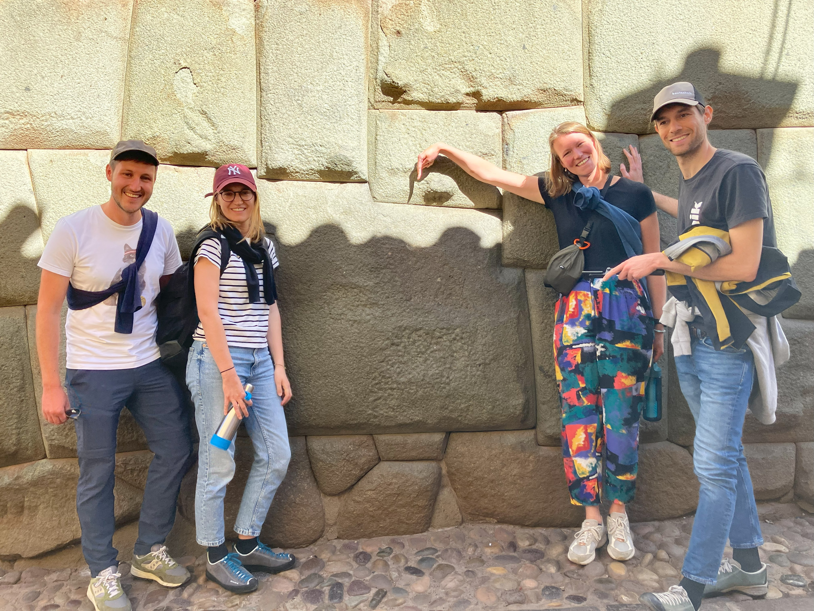
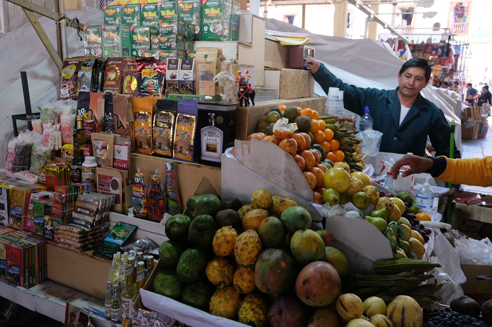
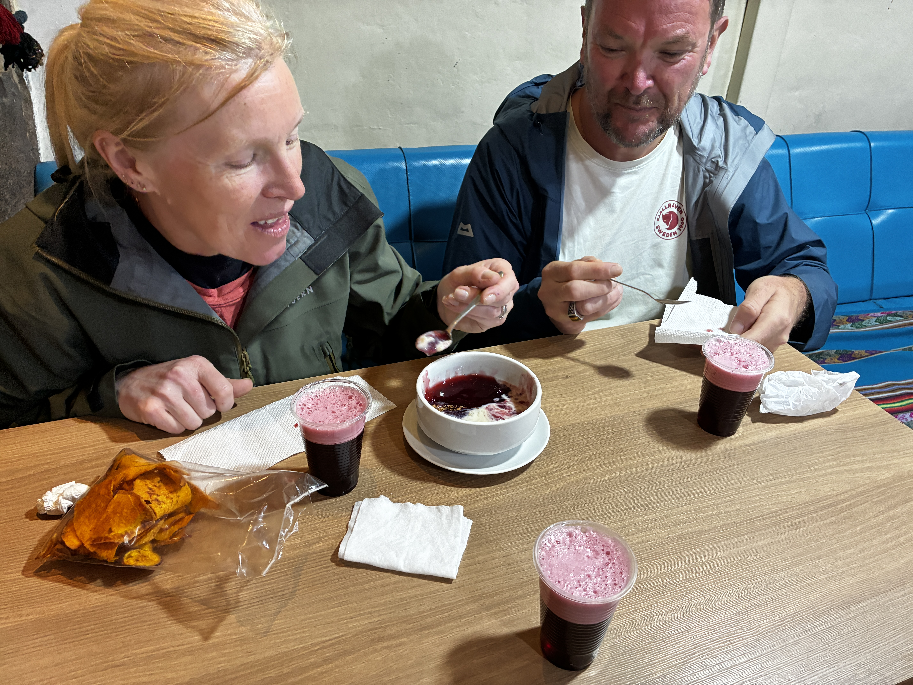
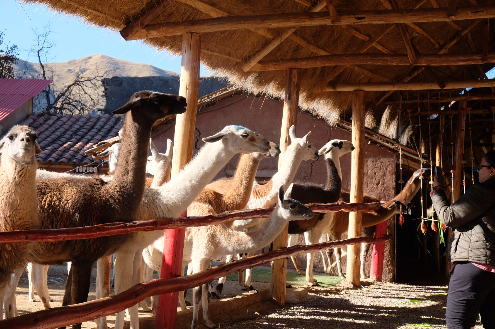
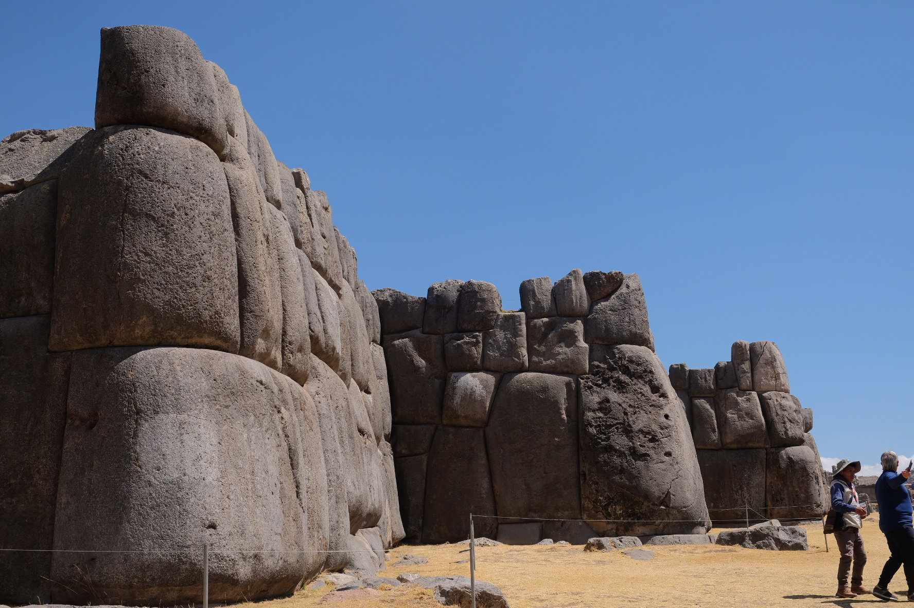
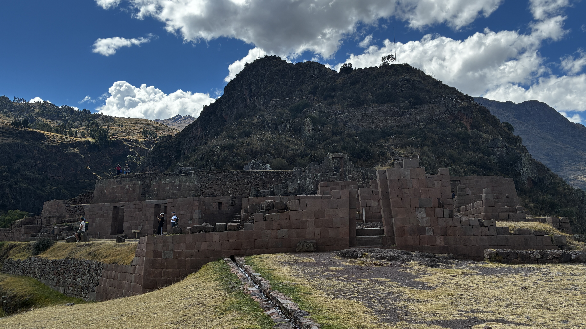
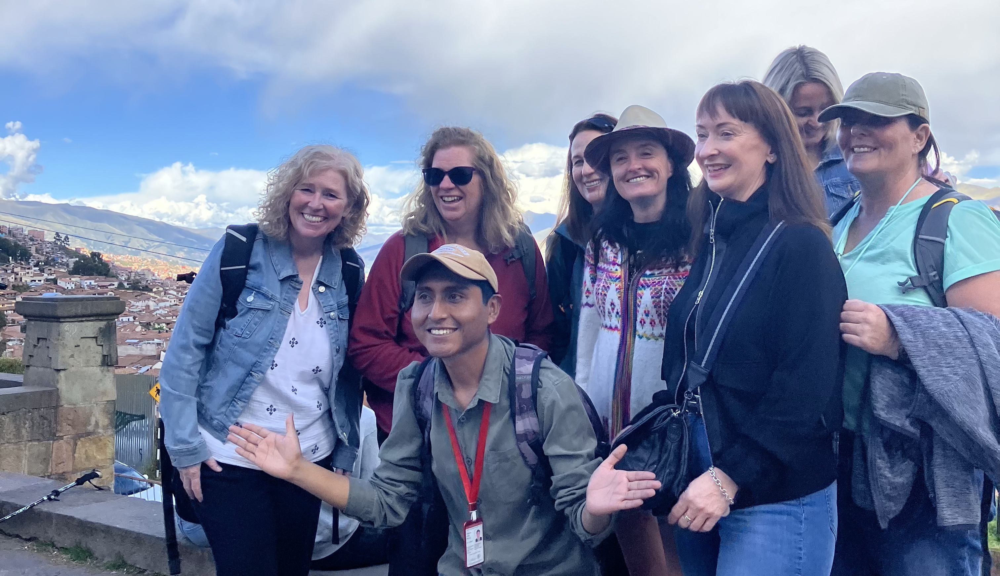

Essential City Tour
Historical Walk of Cusco & San Blas
Walk through Incan streets, colonial plazas, secret alleys, and artisan quarters. Conclude with a complimentary chocolate tasting!
Ask Details on WhatsAppExplore historic Cusco, vibrant artisan quarters, local street food, and ancient ruins at your own pace with a dedicated licensed local guide.
No mega-bus tour groups or rigid schedules. Enjoy custom itineraries tailored to your pace, perfect for family or small group trips.
Deep historical context, authentic culture, and local stories from Waldo—a professional guide born and raised in Cusco.
Discover quiet cobblestone alleys, artisan workshops, San Blas viewpoints, local markets, and artisanal chocolate tastings.
Choose your perfect city walk, culinary tasting, archaeological trip, or custom excursion.

Walk through Incan streets, colonial plazas, secret alleys, and artisan quarters. Conclude with a complimentary chocolate tasting!
Ask Details on WhatsApp
Immerse your senses in Cusco's main market. Sample fresh native Andean fruits, local cheeses, breads, and traditional market specialties.
Ask Details on WhatsApp
Explore Cusco after dark and taste 7 authentic local street food specialties loved by locals away from tourist restaurants.
Ask Details on WhatsApp
Meet native llamas, alpacas, and vicuñas up close. Learn about natural dye processes and traditional Andean weaving techniques.
Ask Details on WhatsApp
Explore the massive megalithic stone fortress overlooking Cusco. Learn about Incan engineering and ceremonial sanctuaries at Q'enqo.
Ask Details on WhatsApp
Explore ancient hillside terraces and royal Incan sectors, followed by Pisac's artisanal market and sanctuary visits.
Ask Details on WhatsApp
Hi, I’m Waldo! As a licensed professional tour guide born and raised in Cusco, I created Cusco Walks to give travelers an authentic, stress-free, and personal connection to my homeland.
I skip the rushed mega-bus groups in favor of private, well-paced walks where we can explore hidden streets, taste real local food, admire Incan architecture, and answer all your questions. Whether you have 2 hours or a full day, I look forward to showing you Cusco through a local's eyes!
★★★★★ 5 out of 5 stars"Waldo gave us an excellent tour! He went above and beyond to make sure we saw all of the sights in the center and San Blas neighborhoods. He is very knowledgeable, friendly, and speaks perfect English. We also hired him for a full-day tour of Pisac, including stops at the animal and camelid sanctuaries, which was amazing and highly recommended."
— Alex (United States) • Aug 28, 2026
★★★★★ 5 out of 5 stars"We were short on time in Cusco before a trek and this was a great introduction to the city highlights. Our guide Waldo was excellent. It was a rainy day but that did not diminish the experience. Chocolate tasting was a highlight! We opted to end the tour at the market in San Blas and enjoyed a nice lunch there. I highly recommend this tour. Excellent value!"
— GetYourGuide Traveler (United States) • Aug 22, 2026
Send a direct message on WhatsApp for fast response, current availability, and custom pricing for your group.
⚡ Fast responses guaranteed within 1 hour